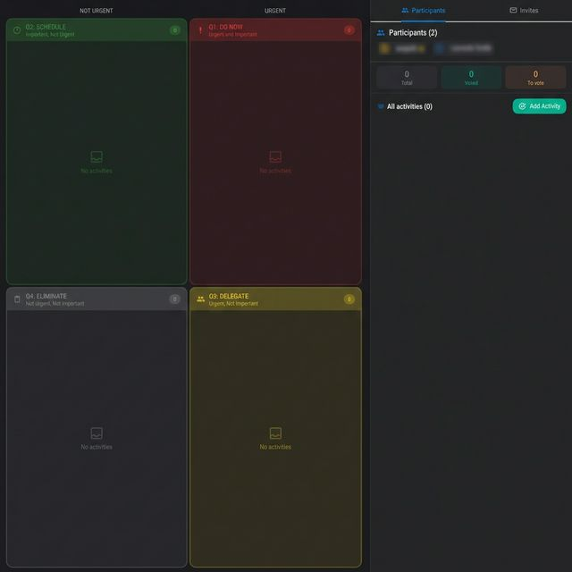
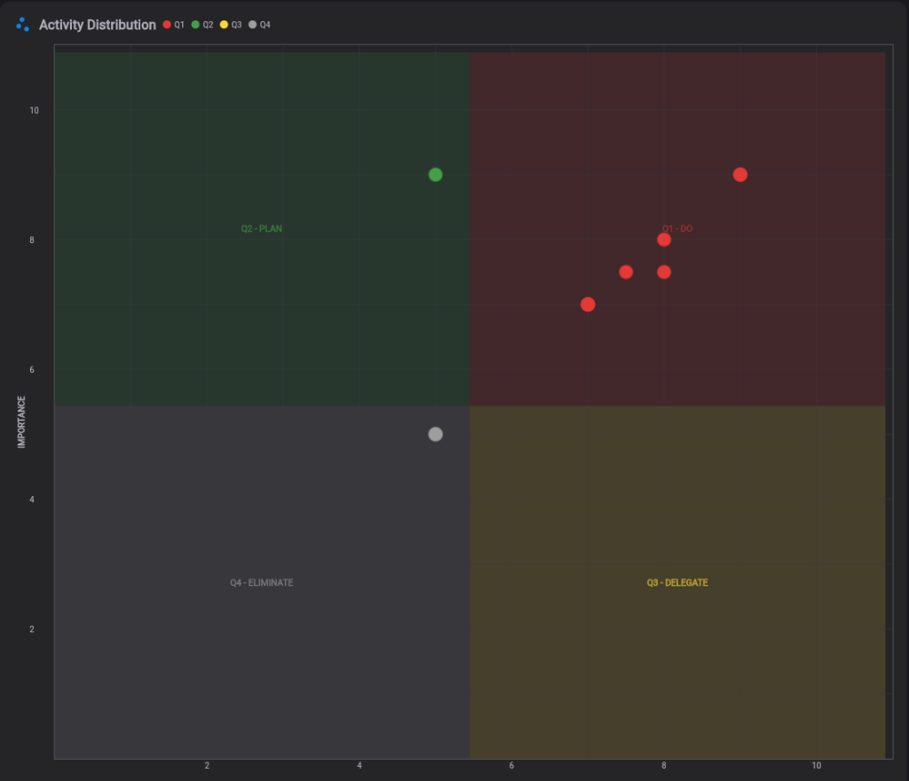
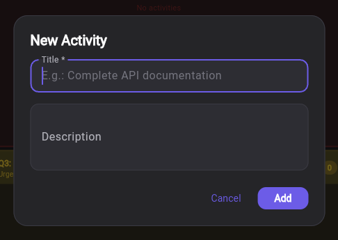
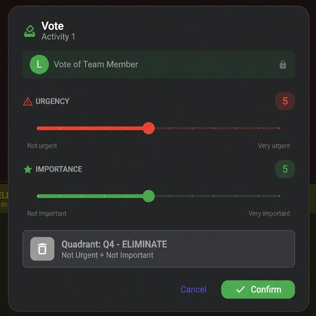
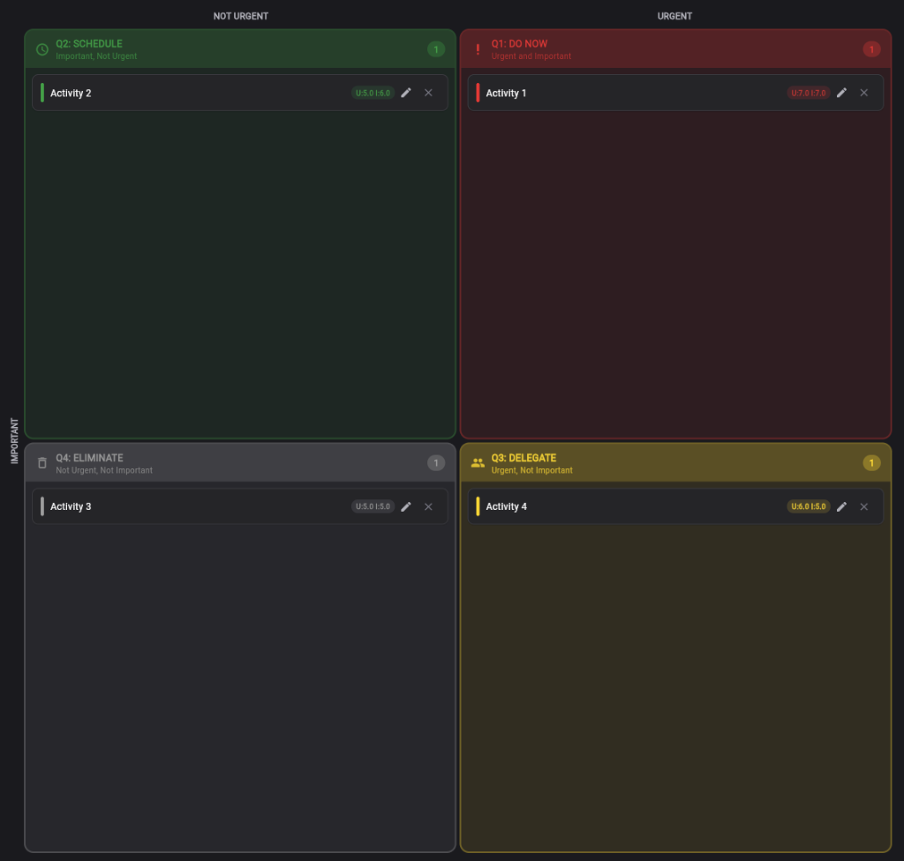

Matrice de Eisenhower Gratuite en Ligne pour la Priorisation d'Equipe
La matrice de gestion du temps ultime pour organiser les tâches par urgence et importance. Vote collaboratif, graphique scatter, matrice RACI et plusieurs modes de visualisation. Aussi connue sous le nom d'Eisenhower Box, matrice urgent-important ou méthode Eisenhower. Connectez-vous avec Google et commencez en quelques secondes.
Essayer Gratuitement →La Matrice Eisenhower en action


Comment ça Fonctionne
Ajoutez vos tâches
Saisissez les activités à évaluer et invitez votre équipe à collaborer à la priorisation. Chaque tâche peut avoir une description, des notes et des tags.

Votez et classez
L'équipe vote indépendamment sur l'urgence et l'importance. Le système assigne automatiquement chaque tache au bon quadrant avec un scoring transparent.

Agissez sur les priorités
Concentrez-vous sur les taches "Faire Maintenant", planifiez les importantes, deleguez les urgentes et eliminez les distractions. Exportez vers les autres outils Keisen.

Pourquoi les Equipes Choisissent Keisen comme Outil de Priorisation
Systeme a 4 Quadrants
Glissez-deposez les taches dans Faire Maintenant, Planifier, Deleguer et Eliminer de maniere intuitive.
Vote d'Equipe
Vote independant sur l'urgence et l'importance with reveal system for unbiased decisions.
Vues Multiples
Passez entre la vue grille, le graphique scatter et la liste de priorites pour differentes perspectives d'analyse.
Matrice RACI
Attribuez les rôles: Responsable, Approuveur, Consulté et Informé pour chaque tâche priorisée.
Import & Export
Déplacez vos données en toute fluidité. Importez des tâches depuis un fichier CSV pour commencer instantanément, ou exportez votre matrice priorisée en PDF et CSV pour des rapports professionnels et un partage d'équipe.
Les 4 Quadrants de la Matrice Eisenhower
Faire Maintenant (Urgent + Important)
Taches critiques qui necessitent une action immediate. Echeances imminentes, problemes a resoudre et activites a fort impact qui ne peuvent pas attendre.
Exemples : urgences, echeances imminentes, bugs critiques
Planifier (Pas Urgent + Important)
Activites strategiques qui meritent du temps et de l'attention. Planification a long terme, developpement des competences et objectifs strategiques de l'equipe.
Exemples : planification strategique, developpement personnel, objectifs a long terme
Deleguer (Urgent + Pas Important)
Taches qui necessitent une action rapide mais peuvent etre gerees par d'others. Interruptions, certains emails et demandes de routine qui ne necessitent pas votre expertise specifique.
Exemples : taches routinieres, demandes operationnelles, activites delegables
Eliminer (Pas Urgent + Pas Important)
Activites qui consomment du temps sans generer de valeur reelle. Distractions, reunions inutiles et taches a faible impact qui peuvent etre supprimees du workflow.
Exemples : distractions, reunions inutiles, taches a faible impact
Outils Avancés de Priorisation de Tâches
- Template Matrice de Eisenhower prêt à l'emploi avec priorisation à 4 quadrants et glisser-déposer intuitif
- Vote anonyme — les membres de l'équipe votent indépendamment sur l'urgence et l'importance (échelle 1–10). Les votes restent masqués jusqu'à ce que le facilitateur active la révélation collective, évitant le biais d'ancrage et garantissant une évaluation authentique de chaque personne
- Sessions guidées par le facilitateur — le propriétaire de la matrice agit comme facilitateur, guidant le flux de la priorisation : lancement des tours de vote, révélation des résultats et gestion des participants. Les observateurs peuvent suivre sans influencer les scores
- Système d'invitations — partagez votre matrice via un lien ou par e-mail. Définissez des rôles (Facilitateur, Votant, Observateur) pour chaque participant afin de contrôler qui peut voter et qui regarde
- Trois modalités de visualisation : vue grille pour la mise en page classique des quadrants, graphique de dispersion pour tracer l'urgence par rapport à l'importance et liste de priorités pour les éléments d'action classés
- Matrice RACI intégrée — attribuez des rôles de Responsable, Approbateur, Consulté et Informé directement sur chaque tâche. Vous saurez exactement qui fait quoi après la priorisation
- Collaboration en temps réel avec suivi de présence — voyez qui est en ligne, qui a voté et qui hésite encore
- Scoring automatique basé sur les votes de l'équipe avec moyennes pondérées et statistiques d'alignement pour mesurer le consensus
- Importation et exportation CSV avec des modèles dédiés — chargez des tâches en masse à partir de feuilles de calcul ou exportez les résultats priorisés pour les rapports
- Rapports Professionnels — Exportez les résultats de votre priorisation dans des rapports PDF multi-pages. Comprend la grille à 4 quadrants, les graphiques de dispersion avec les données de consensus et la matrice RACI per l'alignement de l'équipe et les présentations d'entreprise. Entièrement compatible avec les appareils mobiles et les tablettes, il vous permet de partager et d'imprimer des rapports professionnels où que vous soyez.
- Exportation croisée vers Smart Todo pour la gestion des tâches ou vers Agile Process pour la planification des sprints — les scores de priorité sont transférés automatiquement
- Finalisation et archivage des tâches — marquez les tâches comme terminées, archivez les sessions passées et conservez un historique des décisions de priorisation
- Tags, descriptions et notes sur chaque tâche pour une priorisation riche en contexte
- Connectez-vous avec Google et commencez votre première matrice en quelques secondes — fonctionne dans n'importe quel navigateur, aucun logiciel à installer
- Une alternative moderne aux feuilles de calcul Excel, aux matrices Eisenhower sur Notion et aux outils de gestion statiques
Completez votre workflow agile avec Estimation Room pour l'estimation collaborative et Retrospective pour l'amelioration continue de l'equipe.
L'Origine : De Dwight Eisenhower à Stephen Covey
La Matrice d'Eisenhower a été inspirée par Dwight D. Eisenhower, 34e président des États-Unis et commandant suprême des forces alliées pendant la Seconde Guerre mondiale. Il a déclaré sa célèbre phrase : "Ce qui est important est rarement urgent et ce qui est urgent est rarement important."
Stephen Covey a plus tard popularisé ce concept dans son best-seller Les 7 habitudes de ceux qui réalisent tout ce qu'ils entreprennent, en le présentant comme la Matrice de gestion du temps — un outil pour passer d'une gestion de crise réactive (Quadrant 1) à une planification proactive (Quadrant 2). L'idée de Covey était que le Quadrant 2 — important mais non urgent — est celui où se déroule le travail à plus fort impact : planification stratégique, établissement de relations et croissance personnelle.
Keisen apporte ce cadre éprouvé à l'ère numérique avec une collaboration d'équipe en temps réel, transformant une méthode de productivité personnelle en un puissant outil de priorisation d'équipe.
Questions Frequentes
Qu'est-ce que la Matrice Eisenhower ?
La Matrice Eisenhower est un cadre de priorisation qui organise les taches en 4 quadrants bases sur l'urgence et l'importance : Faire Maintenant (urgent et important), Planifier (important mais pas urgent), Deleguer (urgent mais pas important) et Eliminer (ni urgent ni important). Dans Keisen, vous pouvez l'utiliser de maniere collaborative avec votre equipe.
Comment fonctionne le systeme a 4 quadrants dans Keisen ?
Ajoutez les taches a evaluer et votre equipe vote independamment sur l'urgence et l'importance de chacune. Le systeme calcule automatiquement le placement dans le bon quadrant en fonction de la moyenne des votes. Vous pouvez aussi deplacer manuellement les taches entre les quadrants par glisser-deposer.
Qu'est-ce que l'integration de la matrice RACI ?
La matrice RACI est integree directement dans la Matrice Eisenhower. Pour chaque tache, vous pouvez attribuer qui est Responsable (fait le travail), Approuve (a l'autorite decisionnelle), Consulte (fournit des avis) et Informe (recoit les mises a jour). Cela clarifie les responsabilites pour chaque tache priorisee.
Comment fonctionne le vote d'equipe ?
Chaque membre de l'equipe vote independamment sur l'urgence et l'importance de chaque tache, avec un score de 1 a 5. Les votes sont caches jusqu'au reveal collectif pour eviter les biais. Le systeme calcule la moyenne des votes et affiche les statistiques d'alignement de l'equipe.
Puis-je utiliser la Matrice Eisenhower avec une equipe a distance ?
Oui, Keisen est concu pour les equipes a distance comme en presentiel. C'est un outil web qui fonctionne dans n'importe quel navigateur. Les membres de l'equipe peuvent participer via invitation, voter independamment et collaborer a la priorisation en temps reel depuis n'importe quel endroit.
En quoi Keisen est-il different des autres outils de priorisation ?
Keisen combine la Matrice Eisenhower avec des fonctionnalites uniques : vote d'equipe avec reveal, graphique scatter interactif, matrice RACI integree, scoring automatique et export cross-tool vers Smart Todo, Estimation Room et Sprint Agile. Ce n'est pas juste une matrice statique mais un systeme de priorisation collaboratif complet.
Puis-je exporter les taches priorisees ?
Oui, vous pouvez exporter en CSV pour l'analyse externe ou transferer directement les taches priorisees vers Smart Todo pour la gestion des taches, Estimation Room pour l'estimation collaborative ou Agile Process pour l'integration dans les sprints. L'export cross-tool conserve toutes les informations de priorite.
Comment commencer a utiliser Keisen ?
Commencer est rapide et simple : connectez-vous avec votre compte Google et vous etes pret. Pas de longs formulaires d'inscription. Ouvrez Keisen, creez une nouvelle matrice, ajoutez les taches et invitez votre equipe. Le processus entier prend moins d'une minute.
La Matrice d'Eisenhower fonctionne-t-elle sur les appareils mobiles ?
Oui, Keisen est entierement responsive et fonctionne sur smartphones, tablettes et navigateurs de bureau. Vous pouvez prioriser les taches, voter sur l'urgence et l'importance et visualiser le graphique de dispersion depuis n'importe quel appareil — aucun telechargement d'application necessaire. L'interface s'adapte a la taille de votre ecran pour la meilleure experience.
La Matrice de Eisenhower est-elle la meme chose que la Matrice de Gestion du Temps ?
Oui, la Matrice de Eisenhower est souvent appelee Matrice de Gestion du Temps, Matrice Urgent-Important ou Eisenhower Box. Stephen Covey en a popularise une version dans son livre Les 7 Habitudes de ceux qui realisent tout ce qu'ils entreprennent comme les 4 Quadrants de la Gestion du Temps. Keisen implemente la Methode Eisenhower complete with collaborative features.
Quelle est la difference entre urgent et important ?
Les taches urgentes exigent une attention immediate mais ne contribuent pas forcement a vos objectifs a long terme. Les taches importantes contribuent a votre mission et vos valeurs. La Methode Eisenhower enseigne que la plupart des gens consacrent trop de temps aux taches urgentes mais pas importantes (Quadrant 3) au lieu de celles importantes mais pas urgentes (Quadrant 2). Keisen aide les equipes a faire la distinction grace a des votes structures.
Puis-je utiliser Keisen comme template de la Matrice de Eisenhower ?
Keisen va au-dela d'un simple template de la Matrice de Eisenhower. Au lieu d'un PDF, Excel ou template Notion, vous obtenez une matrice de priorisation interactive avec vote d'equipe, scoring automatique, graphique scatter et attribution de roles RACI. C'est l'outil de priorisation de taches ideal pour les equipes qui ont besoin d'une matrice de productivite dynamique et reutilisable.
Quels sont des exemples pratiques de la Matrice de Eisenhower ?
Exemples de la Matrice de Eisenhower : Faire Maintenant — un bug en production affectant les clients, une echeance contractuelle demain. Planifier — planification strategique, developpement des competences, amelioration des processus. Deleguer — rapports de suivi routiniers, organisation de reunions, approbations standard. Eliminer — verification excessive des emails, reunions inutiles, rapports a faible valeur. Keisen fournit cette matrice de priorite d'action avec collaboration en temps reel.
Decouvrez les Autres Outils Keisen
Pret a mieux prioriser ?
Commencez a utiliser la Matrice Eisenhower pour vous concentrer sur ce qui compte vraiment.
Commencer Gratuitement →